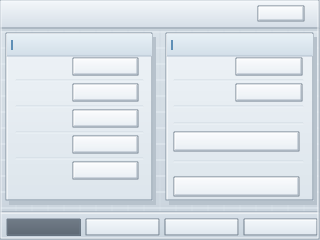

首页总览 v5，预览按 2 倍显示；背景用不带文字的 clean 版，适合直接替换你当前 TJC 背景。

导入 TJC 时优先用 home_overview_bg_320x240_v5_clean.png，因为它不带文字，不会和你现在已经摆好的控件叠在一起。
home_overview_bg_320x240_v5_clean.png
所有白框坐标沿用 v4，没有移动。你现有控件不需要重新摆，只需要替换背景图后检查一下视觉效果。
home_overview_bg_320x240_v5.png 是带文字参考版，不建议直接替换到当前页面。
home_overview_bg_320x240_v5.png